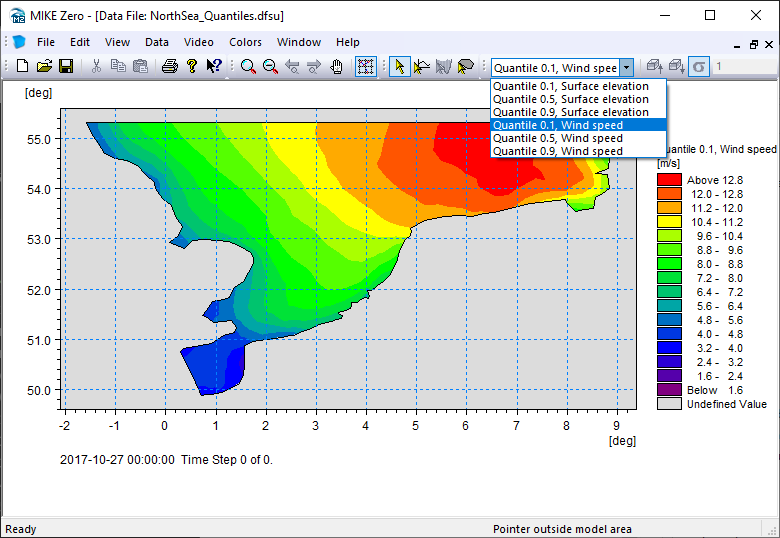

Statistics
Contents
Statistics#
After running your MIKE simulation, you would often want to make different kinds of summary statistics of your data - both for your own understanding and for communicating your results.
Examples of statistics
Min, max, mean, standard deviation
Quantiles/percentiles (e.g. median, interquartile range, return period etc)
Probability/frequency of exceedance
Types of aggregations
Total - aggregate all data to a single number
Temporal - aggregate all time steps; for a dfsu 2d, the result would be a map
Spatial - aggregate all elements to a single value per time step
Others: monthly, by layer, spatial bin, sub domain etc…
Ways of calculating
mikeio.generic (temporal aggregations only; larger-than-memory)
custom code (typically with NumPy)
import mikeio
import mikeio.generic as generic
Dataset / DataArray#
For smaller dfs files (maybe up to 2GB) it can be convenient to read the data to memory before doing aggregations. The MIKEIO.Dataset class have several methods for aggregating data along an axis. See the generic section below for larger-than-memory data.
ds = mikeio.read("data/NorthSea_HD_and_windspeed.dfsu")
ds
<mikeio.Dataset>
dims: (time:67, element:958)
time: 2017-10-27 00:00:00 - 2017-10-29 18:00:00 (67 records)
geometry: Dfsu2D (958 elements, 570 nodes)
items:
0: Surface elevation <Surface Elevation> (meter)
1: Wind speed <Wind speed> (meter per sec)
Temporal aggregations: mean#
The default is to aggregate along the time axis - the output will therefore be a map.
dsm = ds.mean()
mean_ws = dsm["Wind speed"]
mean_ws.shape
(958,)
mean_ws.plot(title="Mean wind speed");

Spatial aggregations#
The Dataset aggregation methods (e.g. mean) takes an axis argument. If we give it the spatial axis (or the string ‘space’), it will produce a time series of spatially aggregated values.
Note
It’s important to note that the spatial aggregations here ignores element areas! Only average takes a weights argument.
ds.mean(axis="space").plot();
Dataset/DataArray has other methods for calculating typical statistics, e.g. max, quantile…
ds.Wind_speed.max(axis="space").plot(title="Max wind speed");
ds.Wind_speed.quantile(q=[0.1,0.5,0.9],axis="space").plot();
It’s important to know that the element area is not taking into account when doing the spatial aggregations! Only Dataset.average supports weighted averages.
df = ds[["Wind speed"]].mean(axis="space").to_dataframe().rename(columns={"Wind speed":"Simple mean"})
area=ds.geometry.get_element_area()
df['Weighted'] = ds[["Wind speed"]].average(axis="space", weights=area).to_dataframe()
df.plot(title="Mean wind speed (simple vs weighted by element area)");
ds
<mikeio.Dataset>
dims: (time:67, element:958)
time: 2017-10-27 00:00:00 - 2017-10-29 18:00:00 (67 records)
geometry: Dfsu2D (958 elements, 570 nodes)
items:
0: Surface elevation <Surface Elevation> (meter)
1: Wind speed <Wind speed> (meter per sec)
Inline exercise
Create a new DataArray with the temporal mean of the Surface elevation \(\eta\)
Create a new DataArray with the Surface elevation anomaly, \( \eta - \overline{\eta} \)
Plot the last time step of the anomaly
# insert your code here
Quantiles to file#
dsq = ds.quantile(q=[0.1,0.5,0.9])
dsq
<mikeio.Dataset>
dims: (element:958)
time: 2017-10-27 00:00:00 (time-invariant)
geometry: Dfsu2D (958 elements, 570 nodes)
items:
0: Quantile 0.1, Surface elevation <Surface Elevation> (meter)
1: Quantile 0.5, Surface elevation <Surface Elevation> (meter)
2: Quantile 0.9, Surface elevation <Surface Elevation> (meter)
3: Quantile 0.1, Wind speed <Wind speed> (meter per sec)
4: Quantile 0.5, Wind speed <Wind speed> (meter per sec)
5: Quantile 0.9, Wind speed <Wind speed> (meter per sec)
Write to a new dfsu file
dsq.to_dfs("NorthSea_Quantiles.dfsu")

Total#
Aggregating over all data (both time and space) can be done from the Dataset in a few ways:
ds.describe() - will give you summary statistics like pandas df.describe()
using axis=None in ds.mean(), ds.min()
using standard NumPy aggregation functions on the Dataset data e.g. ds[“Wind speed”].mean()
ds.describe()
| Surface elevation | Wind speed | |
|---|---|---|
| count | 64186.000000 | 64186.000000 |
| mean | 0.449857 | 12.772705 |
| std | 0.651157 | 3.694293 |
| min | -2.347003 | 1.190171 |
| 25% | 0.057831 | 10.376003 |
| 50% | 0.466257 | 12.653086 |
| 75% | 0.849586 | 14.885848 |
| max | 3.756879 | 26.213045 |
ds.min(axis=None).to_dataframe()
| Surface elevation | Wind speed | |
|---|---|---|
| 2017-10-27 | -2.347003 | 1.190171 |
ds["Wind speed"].values.min()
1.1901706
Generic#
The MIKEIO.generic submodule can produce common temporal statistics on any dfs file (of any size). The output will be a new dfs file. Currently, generic has these methods for calculating statistics:
avg_time()
quantile()
generic.avg_time("data/NorthSea_HD_and_windspeed.dfsu", "NorthSea_avg.dfsu")
ds = mikeio.read("NorthSea_avg.dfsu", items="Wind speed")
ds
<mikeio.Dataset>
dims: (time:1, element:958)
time: 2017-10-27 00:00:00 (time-invariant)
geometry: Dfsu2D (958 elements, 570 nodes)
items:
0: Wind speed <Wind speed> (meter per sec)
ds["Wind speed"].plot(title="Mean wind speed");
generic.quantile("data/NorthSea_HD_and_windspeed.dfsu", "NorthSea_Quantiles2.dfsu", q=[0.1, 0.5, 0.9])
Custom#
ds = mikeio.read("data/NorthSea_HD_and_windspeed.dfsu")
Dataset.aggregate#
With aggregate we can get Dataset statistics with our “own” function, e.g. standard deviation:
import numpy as np
dsa = ds.aggregate(func=np.std)
dsa["Wind speed"].plot(label="Std [m/s]");
Exceedance probability#
Let’s find out how often the wind exceeds 12m/s in our simulation.
import matplotlib.pyplot as plt
nt = ds.n_timesteps
one_to_zero = 1. - np.arange(1., nt + 1.)/nt
val = ds["Wind speed"].isel(element=0).values
plt.plot(ds.time, val);
plt.plot(ds.time[val>12], val[val>12],'.r');
plt.axhline(y=12,color='r')
plt.ylabel('Wind speed [m/s]')
plt.title('How often is the wind speed above 12m/s (element 0)?');
plt.plot(np.sort(val), one_to_zero);
plt.xlabel('Wind speed [m/s]')
plt.ylabel('Probability of exceedance [-]')
plt.axvline(x=12,color='r')
plt.title('Wind speed exceedance in element 0');
# Create empty DataArray
item=mikeio.ItemInfo(mikeio.EUMType.Probability)
data = np.full(shape=(1,ds.geometry.n_elements), fill_value=np.nan)
dae = mikeio.DataArray(data=data, time="2017-10-27", item=item, geometry=ds.geometry)
threshold = 12
for j in range(ds.n_elements):
# this is a naive and slow way of calculating this!
dat = ds["Wind speed"][:,j].values
dae[0,j] = np.interp(threshold, np.sort(dat), one_to_zero)
dae100 = dae*100
dae100.plot(title="Wind speed exceeding 12 m/s",
label="Time of Exceedance [%]", cmap="YlOrRd");
total_hours = (ds.time[-1]-ds.time[0]).total_seconds()/3600
dae_hours = dae*total_hours
dae_hours.plot(title="Wind speed exceeding 12 m/s",
label="Exceedance [Hours]", cmap="YlOrRd");